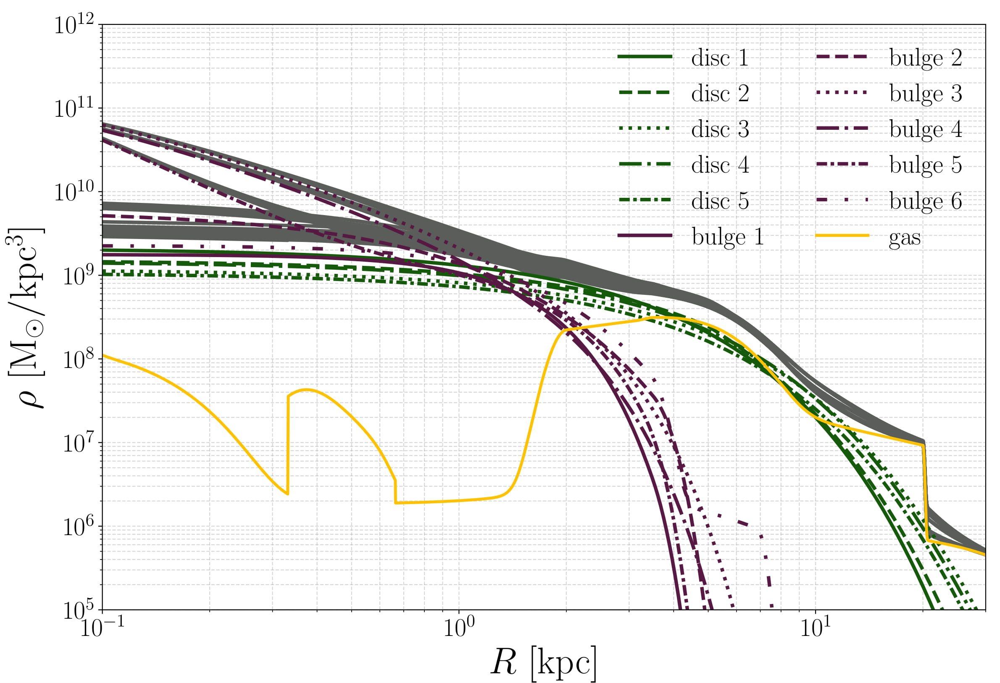
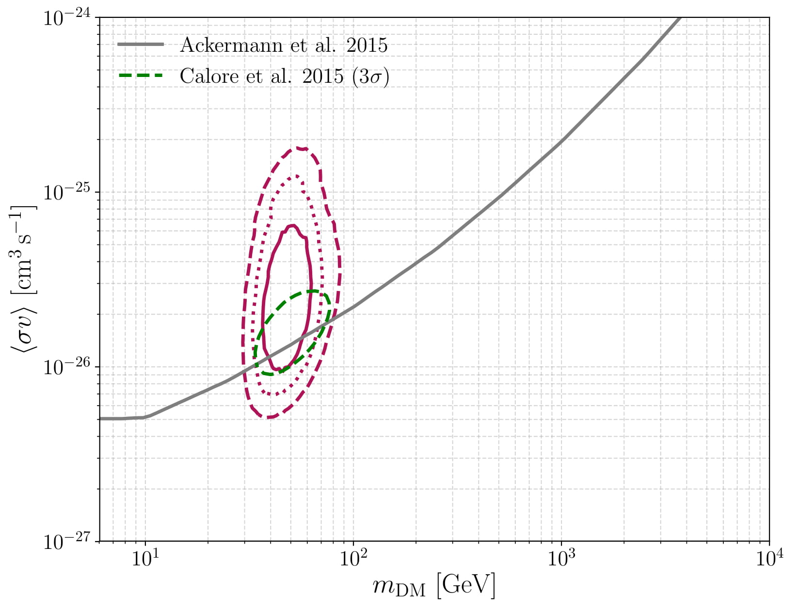
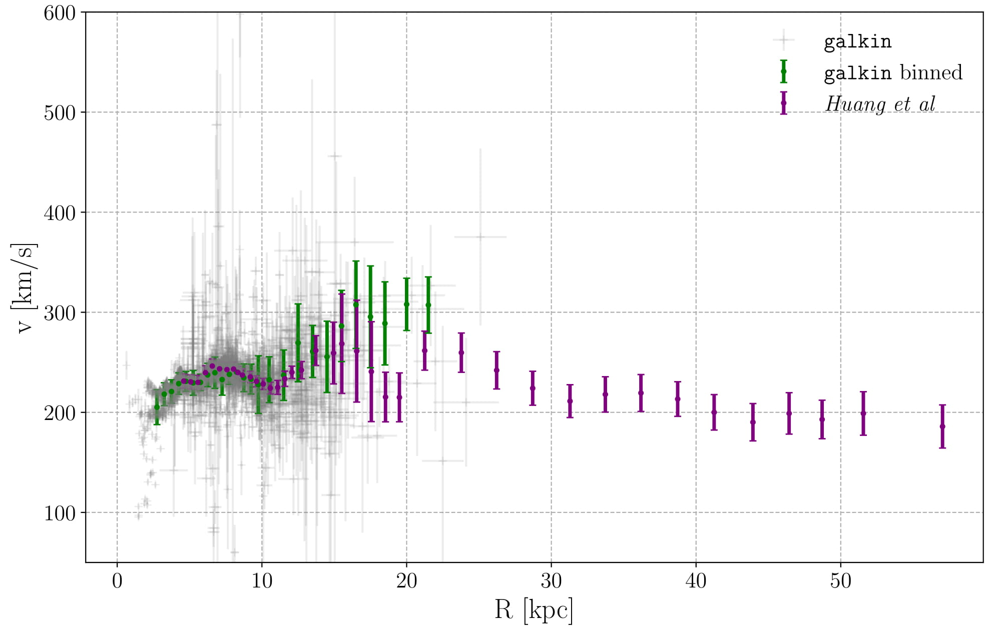
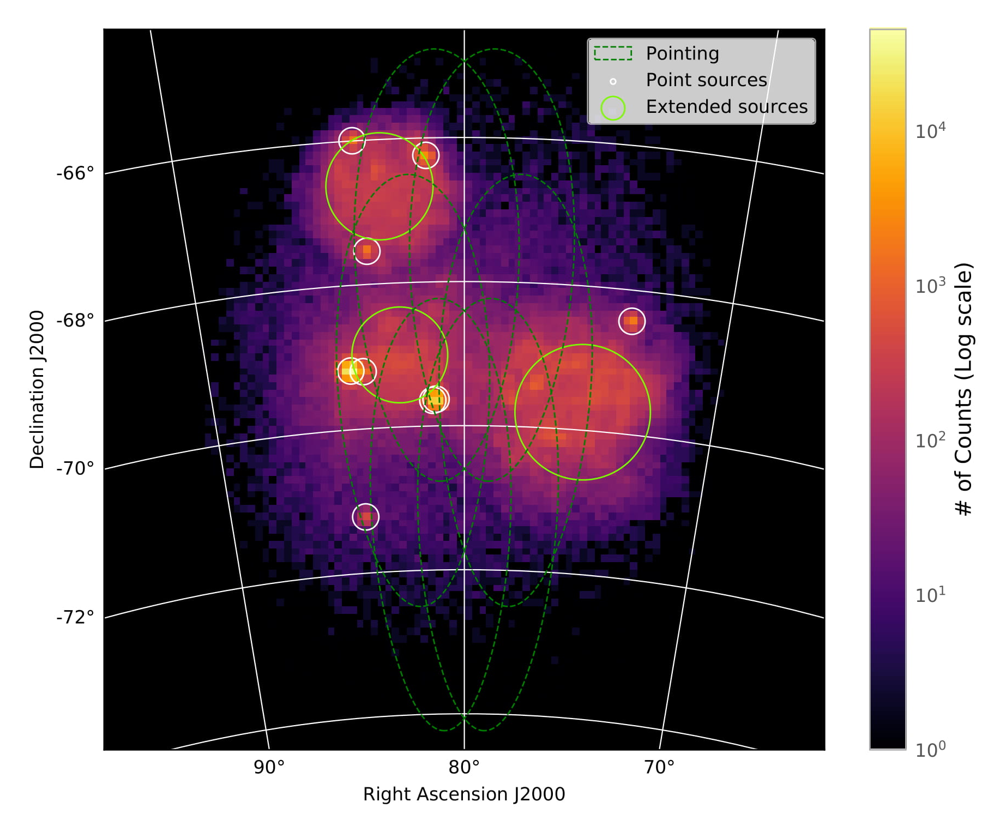

Research Interests
Our Galaxy, the Milky Way, is a benchmark for galaxy formation & evolution models and for experiments
that aim to understand the very nature of the dark matter particle. Due to our position within the
Galactic plane at 8 kpc from the Galactic center, we have access to full phase-space information for a
large number of individual stars. This allows
detailed studies of the different components that constitute our Galaxy and how they have come to be.
So far, my research has been focused on reconstructing the distribution of dark matter in our Galaxy
by means
of the rotation curve, i.e. tracers in circular orbits around the Galactic center that probe the total
gravitational potential. As a member of the
Cherenkov Telescope Array (CTA) collaboration,
I have been
working in the characterisation of the Large Magellanic Cloud, a satellite galaxy of the Milky Way,
at TeV energies.
In the following, I describe some of the topics I am & have been recently involved
in.

Mass Distribution in the Galactic Bulge Region
Dark matter is a subleading component in the central region of our Galaxy (i.e. inner 3 kpc of the Galaxy)
which is dynamically dominated by baryons.
The actual content and density structure of the dark matter in such inner region
is at the center of a long-standing debate on whether the
dark matter profile of galaxies is "cored" or "cusped".-->
Sizeble uncertainties on the actual shape and normalization of the stellar morphology
mask away sound, general conclusions on the inner slope of the DM density profile,
and both core and cusp DM density profiles are allowed.

Particle Dark Matter Constraints: the Effect of Galactic Uncertainties
The interpretation of indirect and direct dark matter searches depend on the adopted
dark matter density profile within the astrophysical target. Particularly,
the reconstructed dark matter density in the Milky Way proceeds from astrophysical observations,
all affected by quantifiable uncertainties. I have worked on a full data-driven analysis
to quantify how actual uncertainties on the relevant astrophysical observations of such quantities
(such as e.g. the Sun's Galactocentric distance) affect the interpretation of in/direct detection
(or lack thereof).

Testing Modified Gravity Theories with the Milky Way
Alternative proposals to explain the mismatch between the observed dynamical mass
and that inferred by observations of the visible component, of
astrophysical objects over a large range of mass and spatial scales, relies on a
modification of the theory of gravity.
The Milky Way offers an unique opportunity for testing modifications of gravity on the
scale of spiral galaxies by means of the observed rotation curve. By comparing the
gravitational potential as a function of galactocentric distance with the potential
that is expected to be generated by the visible component (stars and gas) only,
we can test the validity of the underlying
gravity theory.

Large Magellanic Cloud Studies with CTA
The Large Magellanic Cloud (LMC) is an active star forming galaxy.
This, together with its proximity and the fact that it is seen almost faced-on,
turns the LMC a valuable target for gamma-ray studies.
We studied the forecasts on detecting the already known gamma-ray sources (point
sources, individual extended sources and the diffuse emission produced by the
propation of cosmic rays within the source) in the
LMC with the CTA's Southern Array.
We further characterised the signal expected due to dark matter annihilation
and the corresponding constraints on the dark matter particle parameter space.